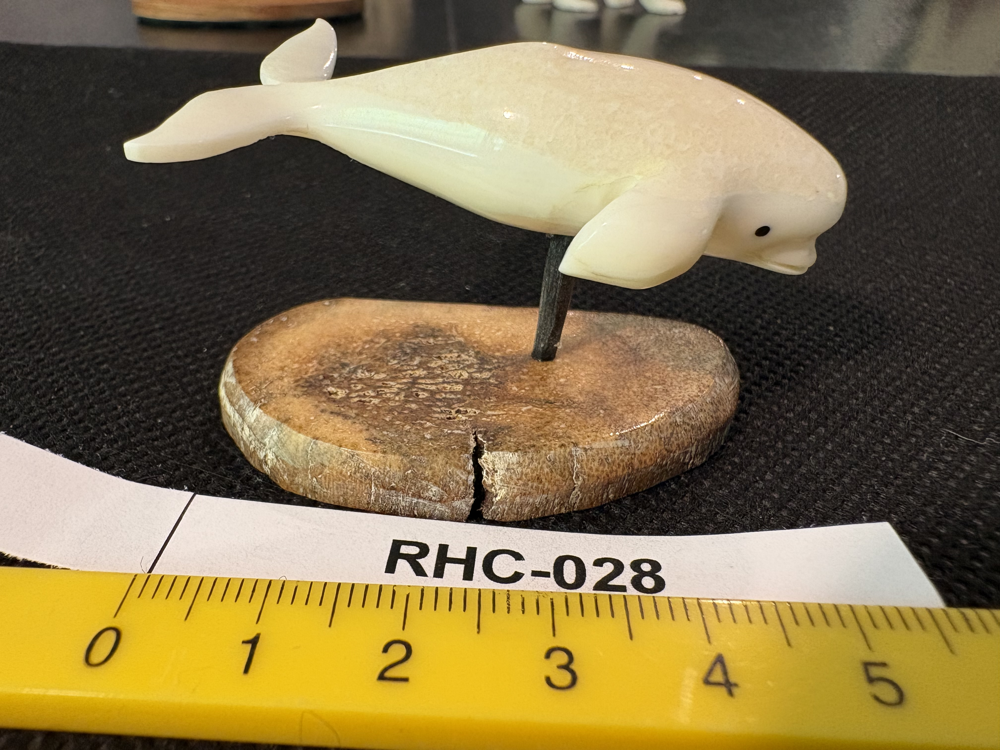

RHC-028 reviewed
Carved Ivory Beluga Whale Figurine on Walrus Ivory Cross-Section Base

- Object Type
- Fully carved (not flat-engraved) three-dimensional figurine of a beluga whale, mounted via a metal pin into a natural, rounded walrus-ivory cross-section base (per Richard H. Cornelia — not horn or tusk of undetermined type) with a visible natural crack.
- Material
- Ivory figurine on a walrus ivory base (confirmed by Richard H. Cornelia via the mottled/marbled appearance of the base's core). Beluga whale subject is consistent with Alaska Native/Inuit ivory carving traditions.
- Dimensions (cm)
- length: 6.5cm — Length (~6.5cm, nose to tail) estimated off the cm scale shown in the photos.
- Subject Matter
- A beluga whale in a swimming pose, smoothly carved with a rounded melon-head, small carved eye (black dot), pectoral fin, and upturned tail fluke — naturalistic, minimally detailed sculptural style typical of small figural ivory carvings.
- Artist Attribution
- unknown
- Date / Period
- undated; no signature or mark found
- Mount / Display Stand
- Mounted on a small natural rounded base (horn or tusk root cross-section, tan-brown mottled with a visible natural crack) via a thin metal pin inserted into the whale's underside.
- Color / Technique
- Fully carved sculptural form, natural material coloring only (cream-white with a slight yellow tone), no engraving or ink work — same sculptural technique family as RHC-027, distinct from the flat-engraved scrimshaw pieces making up most of the collection.
- Condition Notes
- Figurine surface appears smooth, glossy, and intact; the natural base shows a visible crack but appears structurally stable. Not physically examined.
- Distinguishing Features
- Second fully three-dimensional carved sculpture in the collection (after RHC-027), and the smallest/simplest of the sculptural pieces — a single naturalistic animal figure rather than a genre or narrative scene. Beluga whale subject and carving style suggest a possible Alaska Native/Inuit origin, worth comparing against RHC-021 and RHC-024 (also with Alaska Native/Arctic connections).
- Legal / Regulatory Status
- Material not confirmed. If walrus ivory, MMPA exemption may apply if of Alaska Native manufacture; if not, modern-manufacture restrictions could apply. Flag for legal review before any loan/sale; not a legal determination.
- Rights / Copyright
- No attribution identified; copyright status undetermined.
- Keywords
- beluga whale carved figurine three-dimensional natural horn/tusk base possible Alaska Native origin not flat-engraved
- Status
- reviewed
- Date Cataloged
- 2026-07-15
Open Research Questions
Research finding (phase 3, 2026-07-15): Confirmed Alaska Native/Inuit ivory figural carving (walrus tusk) of Arctic marine mammals — including beluga whales specifically — is a real, millennia-old, still-practiced tradition along the Bering Sea coast, legal for Alaska Native carvers to sell under Marine Mammal Protection Act exemptions. This piece's subject and material are highly consistent with that tradition rather than a European/export carving style. No specific carver identified. Per Richard H. Cornelia (written review of printed catalog booklet, 2026-07-19): "The mottled or marbled appearance on top shows it is walrus ivory. 'Natural Horn' should be removed from the title."